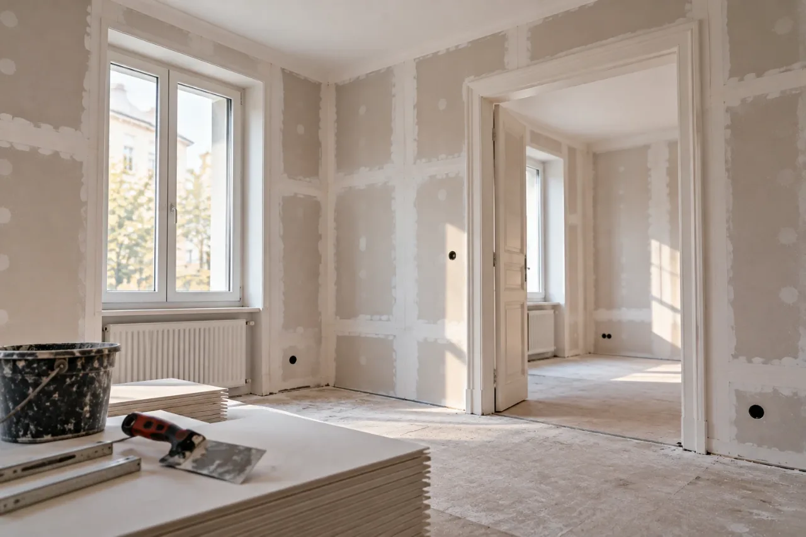

01
Trockenbau & Innenausbau
Räume neu aufteilen, Wände und Decken verkleiden, Beschädigtes ersetzen – ohne Mauern und lange Trocknungszeiten.
- Nichttragende Trennwände, auch mit Tür
- Vorsatzschalen und Verkleidungen
- Abgehängte Decken
- Anpassungen im Bestand